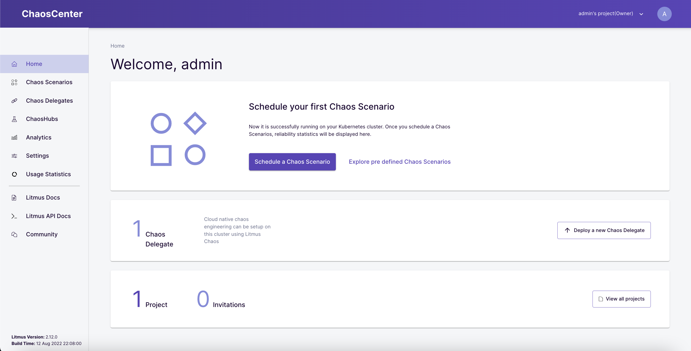
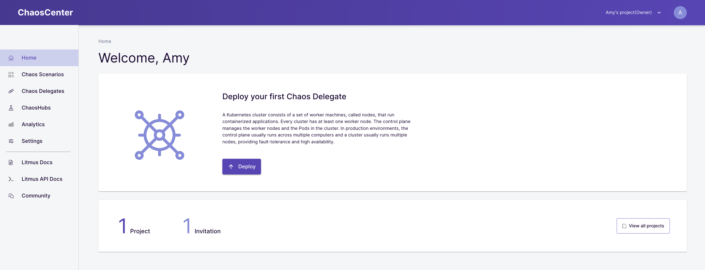
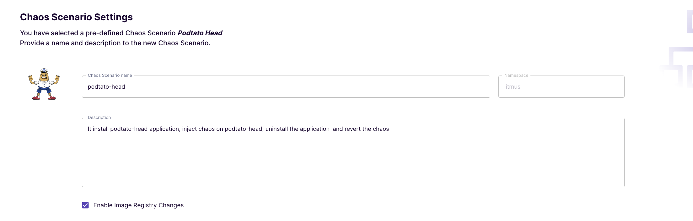
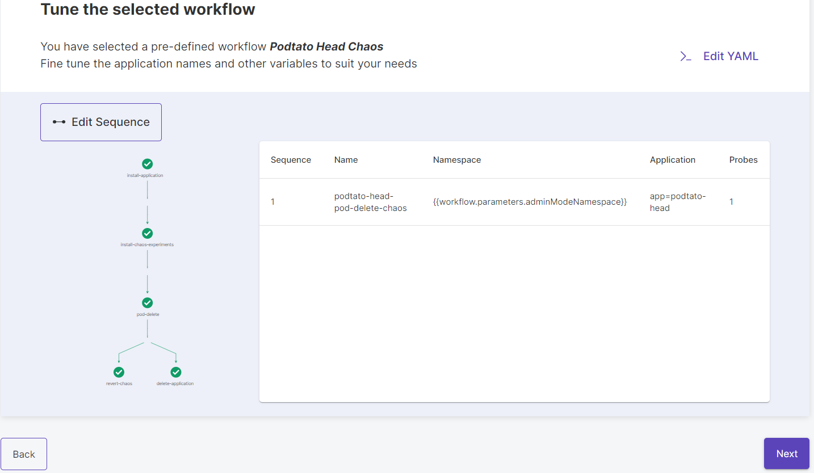
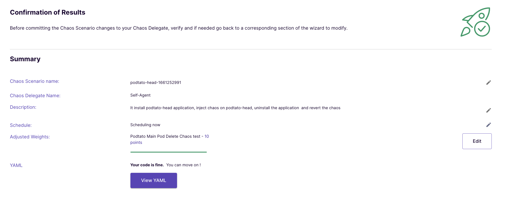
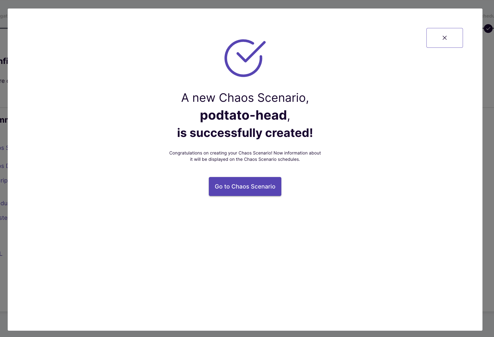

Last Updated: 2021-08-14
Welcome
In this tutorial, you will get an overview of the chaos experimentation flow using the LitmusChaos framework. Before we get started, let us take a look at what you'll learn while you walk yourself through this tutorial
What you will learn
- How to install LitmusChaos
- How to set up a chaos project on the ChaosCenter
- How to execute a predefined chaos workflow
- How to visualize the chaos experiment progress
- How to view and analyze the results of the chaos experiment
In this tutorial, we will inject a pod-delete fault against a sample microservices application called podtato-head and verify if the service continues to be available through the chaos duration.
Pre-Requisites
- Kubernetes 1.17 or later. Recommended sizing of at least: 2 vCPUs, 8GB memory, 10GB of disk space (for persistent volume creation)
- Helm3 or Kubectl
- Access to the internet from Cluster (For Air-Gapped Environments refer to this guide)
Installation of Litmus can be done using either of below methods
- Helm
- Kubectl
Install Litmus using Helm
1.Create a Litmus namespace in Kubernetes
kubectl create ns litmus
2.Add the Litmus Helm Repo
helm repo add litmuschaos https://litmuschaos.github.io/litmus-helm/
3.Install Litmus
helm install litmuschaos --namespace litmus litmuschaos/litmus
Install Litmus using Kubectl
1.Create a Litmus namespace in Kubernetes
kubectl create ns litmus
2.Install Litmus from the manifest
kubectl create ns litmuskubectl apply -f https://litmuschaos.github.io/litmus/2.0.0/litmus-2.0.0.yaml
Verify your Litmus Installation
Check whether the Litmus control plane components comprising the Web-UI (frontend), GraphQL server & MongoDB pods are created and running successfully.
kubectl get pods -n litmus
chaos-litmus-portal-frontend-ff8b554dc-q5rl4 1/1 Running 0 2m6s chaos-litmus-portal-mongo-6764cfdd59-c9r56 1/1 Running 0 2m6s chaos-litmus-portal-server-5ffbccbfff-dknv8 2/2 Running 0 2m6s
Note: It might take a couple of minutes for the installations to enter the running state.
In this section, we will use the ChaosCenter dashboard to set up your first chaos project, verify the installation of agent services on the cluster and prepare for chaos workflow execution.
Access and Login to ChaosCenter Dashboard
Obtain the service endpoint of the litmus-frontend service, either via nodePort or LoadBalancer URL and open on your preferred browser. In case of the former, use the external IP of any one of the cluster nodes with the assigned nodePort.
kubectl get svc -n litmus
NAME TYPE CLUSTER-IP EXTERNAL-IP PORT(S) AGE litmusportal-frontend-service NodePort 10.40.9.102 <none> 9091:31616/TCP 12m litmusportal-server-service NodePort 10.40.10.186 <none> 9002:31242/TCP,9003:32073/TCP 12m mongo-service ClusterIP 10.40.7.121 <none> 27017/TCP 12m
Use the default credentials to login.
Username: admin
Password: litmus

Configure a new password for your use.

You have been assigned a default project with Owner permissions

Verify Successful Registration of the Self Agent
Once the project is created, the cluster is automagically registered as a chaos target via installation of Litmus Chaos Agents. This is represented as "Self-Agent" in the Agents console of the Chaos Center Dashboard.
kubectl get pods -n litmus
NAME READY STATUS RESTARTS AGE argo-server-58cb64db7f-pmbnq 1/1 Running 0 5m32s chaos-exporter-547b59d887-4dm58 1/1 Running 0 5m27s chaos-operator-ce-84ddc8f5d7-l8c6d 1/1 Running 0 5m27s event-tracker-5bc478cbd7-xlflb 1/1 Running 0 5m28s litmusportal-frontend-698bcb686f-xm4q5 1/1 Running 0 15m litmusportal-server-5bb94f65d7-llzng 2/2 Running 1 15m mongo-0 1/1 Running 0 15m subscriber-958948965-qbx29 1/1 Running 0 5m30s workflow-controller-78fc7b6c6-w82m7 1/1 Running 0 5m32s

At this point, we are ready to run chaos experiments!
In this section, we will execute a pre-defined chaos workflow to inject a pod-delete/kill fault on a sample microservices application. The workflow is configured to perform the following actions:
- Install the podtato-head hello service application
- Inject the pod-kill fault
- Verify the availability of the service through the chaos duration using probes
- (Optional) Clean up the chaos resources at the end of the experiment
Select predefined workflow
Click the "Schedule Workflow" on the Chaos Center home page to get started:

Select the "Self-Agent" as the target cluster for chaos execution
Select the option to create a new workflow from pre-defined chaos workflow templates. Amongst the available templates, select the "podtato-head-chaos" option.
View the description of the chaos workflow

Preview the Workflow Steps
View the preview of the chaos workflow.
(Optional) You could also edit the workflow YAML depending upon your need at this stage

(Optional) Preview the Workflow Steps
Assign weights to the chaos experiments that are part of the workflow using the slider. This is useful when there are multiple experiments in the workflow. These weights influence the "Resilience Score" calculation for the chaos workflow.
Schedule the Chaos Workflow
Schedule the chaos workflow for immediate and one-time execution
Click on "Finish" to launch the Chaos Workflow.

The workflow has started running now

Check the Chaos Workflow Progress
Click on "Show the workflow" graph to check the progress of the workflow steps.

Each chaos workflow consists of a set of well-defined steps. The most common amongst them involve installing the ChaosExperiment template (consisting of low-level details of the fault to be executed) and ChaosEngine custom resource (maps a given application instance to the fault along with the specification of steady-state hypothesis). The latter triggers the creation of chaos pods.
In the current example, litmus deploys a sample multi-replica hello-service application before going on to pull the pod-delete ChaosExperiment template. In the next step, it creates the ChaosEngine to launch the chaos injection via dedicated pods.
The ChaosEngine spec embedded into the workflow spec looks like this:
apiVersion: litmuschaos.io/v1alpha1
kind: ChaosEngine
metadata:
name: podtato-head-pod-delete-chaos
namespace: litmus
labels:
instance_id: b9d98f68-ac25-4690-adf3-6b83cc7febce
context: litmus_podtato-head
workflow_name: podtato-head-1628954811
spec:
appinfo:
appns: litmus
app_label: 'app=podtato-head'
appkind: 'deployment'
annotationCheck: 'false'
engineState: 'active'
chaosServiceAccount: litmus-admin
jobCleanUpPolicy: 'retain'
components:
runner:
imagePullPolicy: Always
experiments:
- name: pod-delete
spec:
probe:
- name: "check-podtato-head-access-url"
type: "httpProbe"
httpProbe/inputs:
url: "http://podtato.litmus.svc.cluster.local:9000"
insecureSkipVerify: false
method:
get:
criteria: "=="
responseCode: "200"
mode: "Continuous"
runProperties:
probeTimeout: 1
interval: 1
retry: 1
components:
env:
- name: TOTAL_CHAOS_DURATION
value: '30'
# set chaos interval (in sec) as desired
- name: CHAOS_INTERVAL
value: '10'
# pod failures without '--force' & default terminationGracePeriodSeconds
- name: FORCE
value: 'false'

Watch the action on the cluster where the podtato-head application replica is killed
kubectl get pods -n litmus
NAME READY STATUS RESTARTS AGE chaos-exporter-6bb94bc74f-wkbmw 1/1 Running 0 40m chaos-operator-ce-6bc9c65776-642gl 1/1 Running 0 40m event-tracker-c8c7cdfb5-tkmqd 1/1 Running 0 40m litmusportal-frontend-5c96c9468c-84bb8 1/1 Running 0 40m litmusportal-server-6cb8456cb-lh2s9 2/2 Running 0 40m mongo-0 1/1 Running 0 40m pod-delete-fgnx23-zvght 1/1 Running 0 26s podtato-hats-5f6c4d9ff-v7ckw 1/1 Running 0 11m podtato-hats-new-787797c7fd-fgfg2 1/1 Running 0 11m podtato-head-1628954811-1662063892 2/2 Running 0 33s podtato-head-1628954811-693279641 0/2 Completed 0 77s podtato-head-1628954811-740786171 0/2 Completed 0 71s podtato-left-arm-647c44c49f-kz9wm 1/1 Running 0 11m podtato-left-leg-5544c7c88c-kxgxf 1/1 Running 0 11m podtato-main-7bcb959bd8-4trlh 1/1 Running 0 9m28s podtato-main-7bcb959bd8-clj8t 1/1 Terminating 0 18s podtato-main-7bcb959bd8-nqdqg 0/1 ContainerCreating 0 0s podtato-main-pod-delete-chaos9wxpv-runner 1/1 Running 0 29s podtato-right-arm-98bdff545-jst9f 1/1 Running 0 11m podtato-right-leg-68bb97548f-j2p26 1/1 Running 0 11m subscriber-75bd7565cf-shl7t 1/1 Running 1 40m workflow-controller-78dbff5b5d-xcthg 1/1 Running 0 40m
Once the experiment completes, the chaos resources (ChaosEngine CR & accompanying chaos pods) are removed as part of a "revert-chaos" step. The sample application is also removed from the cluster.

View the Experiment Results
The workflow dashboard can be used to view the results of the chaos experiment. Click on the "pod-delete" node on the graph to launch a results console. Click on the "Chaos Results" tab to view the details around success/failure of the steady-state hypothesis constraints (podtato-head website availability through pod deletion period) and the experiment verdict.

Check the Resilience Score achieved for the chaos workflow by clicking on "Show the analytics".

The analytics view also provides details of successful v/s failed experiments that were part of the workflow.

In this tutorial, we have covered the steps involved in installation/setup of LitmusChaos and execution of a sample chaos experiment. Refer to Litmus Documentation to learn more about the platform.
Please visit us on our Litmus Slack Channel (in Kubernetes workspace) and tell us how you like LitmusChaos and this tutorial! We are happy to hear your thoughts & suggestions!
Also, make sure to follow us on Twitter to get the latest news on LitmusChaos, our tutorials and newest releases!